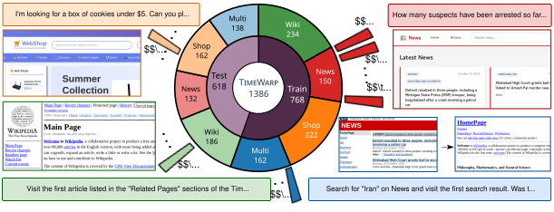
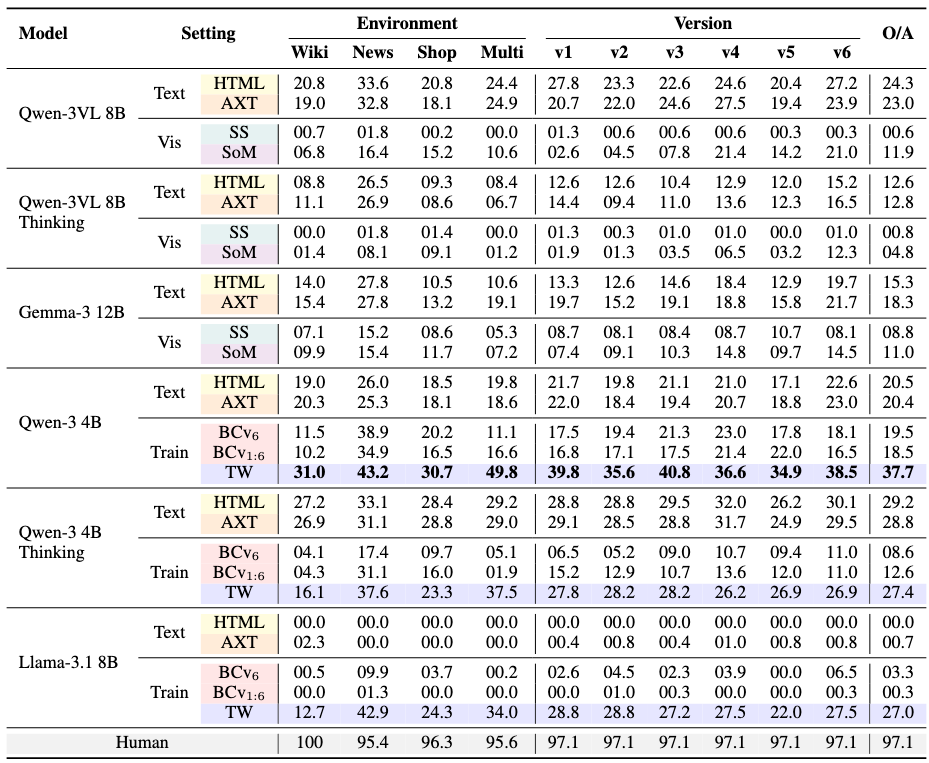
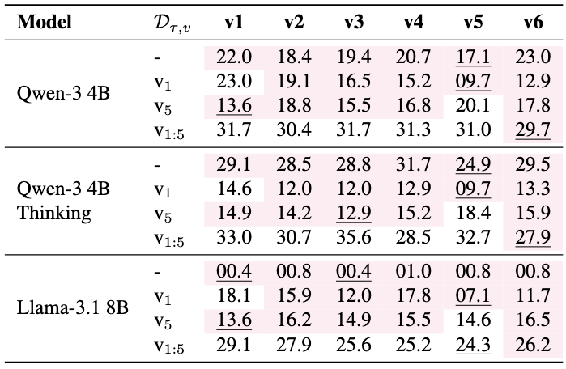
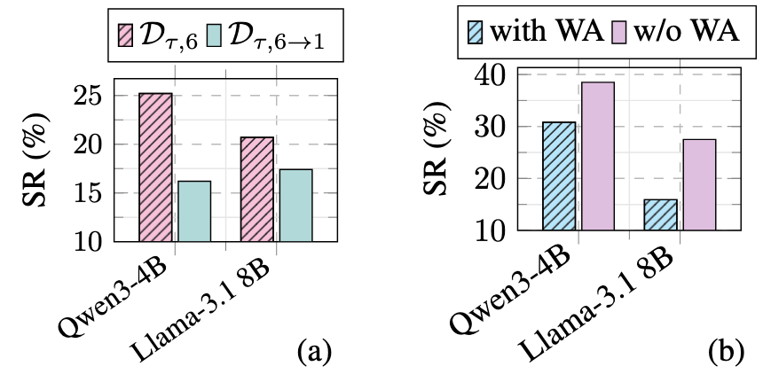
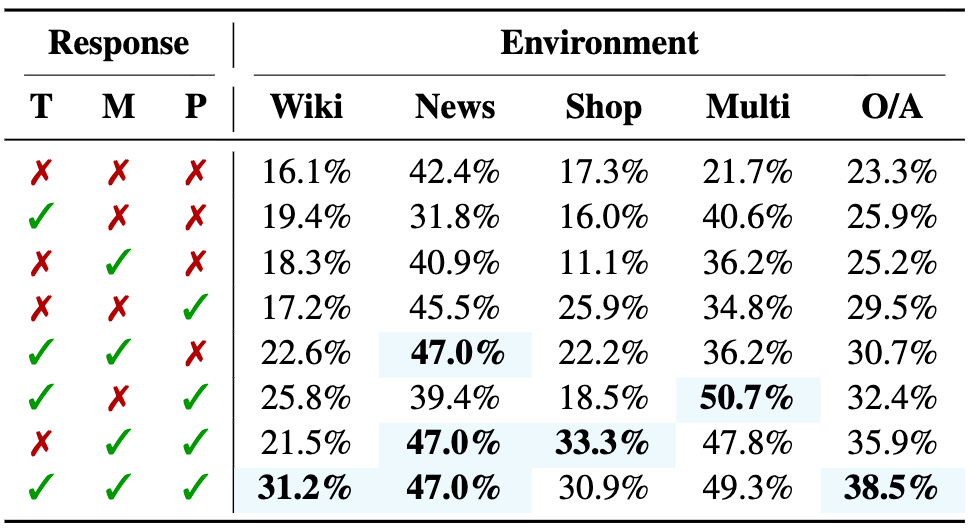
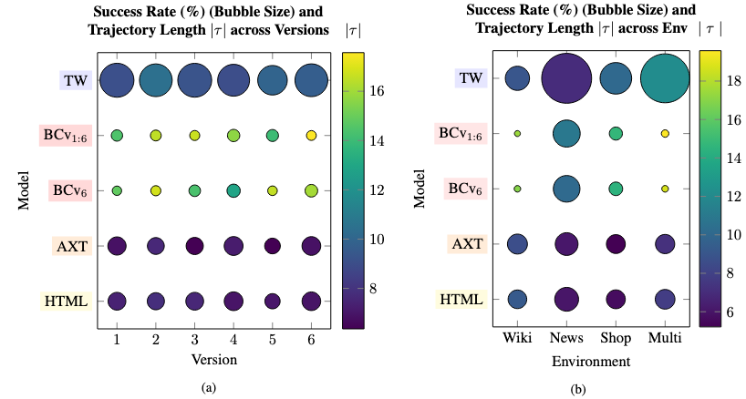
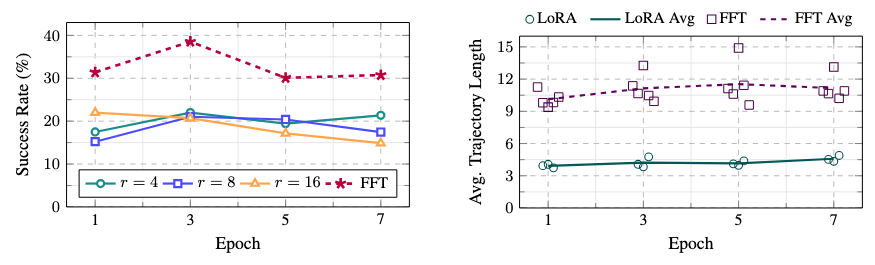
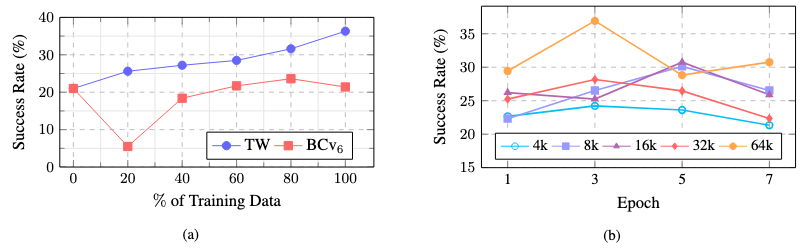
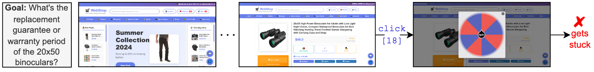

TimeWarp is a benchmark for evaluating the robustness of agents to temporal changes in web UI. TimeWarp consists of three web environments: Wiki, News, and Shop, each with six UI versions across different eras of the internet. The benchmark also includes TimeTraj, a method for scalably collecting trajectories via human-refined plans, and TimeWarp-BC, a variant of Behavior Cloning (BC) to train agents better via knowledge distillation on complex tasks that require memory and planning.
Four categories of tasks: Wiki, News, Shop, and Multi-Environment.
231 unique goals × 6 environments = 1386 tasks.

View and explore the TimeWarp dataset on Hugging Face .
TimeTraj is a scalable method for collecting trajectories from a single human-refined plan per task, which is used to automatically generate trajectories across versions.
TimeWarp-BC extends Behavior Cloning by training the web agent on the teacher's full response, including action, thinking, planning, and memory tokens.

Success Rate (%) of LLM and VLM models on TimeWarp tasks using the observation setting: HTML, Accessibility Tree (AXT), UI Screenshot (SS), Set of Marks (SoM), or the AXT training setting: Behavior Clong (BC) on versions 1 to 6, version 6 only, and TimeWarp-BC (TW).

Training on more versions generally improve performance in held-out versions (in pink).

(a) Continually training on version 1 from version 6, degrades the performance on version 6. (b) Training on WebArena-Lite then TimeWarp also degrades performance.

Behavior cloning performance peaks when trained with (T)hinking, (M)emory, and (P)lanning tokens.

Performance of web agents across versions and environments is correlated with the trajectory length.

Full Fine-tuning (FFT) outperforms LoRA at varying adapter ranks. However, the average trajectory length of LoRA is lower than that of FFT.

(a) Success rate of TimeWarp-BC (TW) agent grows almost linearly with more training data but not the Behavior Cloning (BC) on version 6 agent. (b) Highest success rate is achieved when trained with 64k context for 3 epochs.

Web agent getting stuck due to a popup ad in shop version 5.
@misc{timewarp2026,
title={TimeWarp: Evaluating Web Agents by Revisiting the Past},
author={Md Farhan Ishmam and Kenneth Marino},
year={2026},
eprint={2603.04949},
archivePrefix={arXiv},
primaryClass={cs.AI},
url={https://arxiv.org/abs/2603.04949},
}We would like to thank Nejd Khadija for helping with the task and plan annotation.